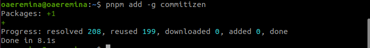
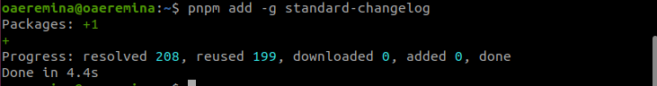
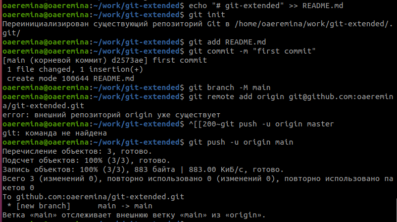
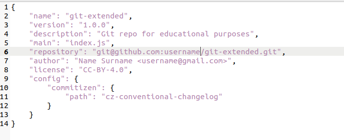
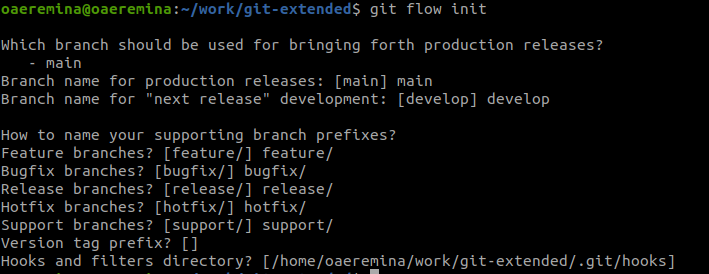
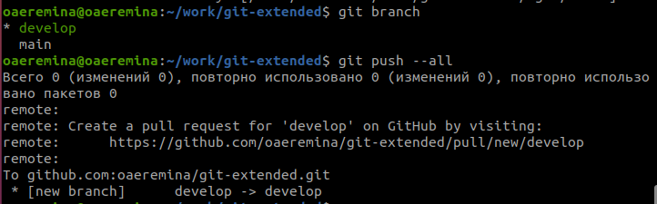

Целью данной лабораторной работы является получение навыков правильной работы с репозиториями git.
Задание
Выполнить работу для тестового репозитория.
Преобразовать рабочий репозиторий в репозиторий с git-flow и conventional commits.
Выполнение лабораторной работы
Установка программного обеспечения
Установка git-flow
Так как у меня ubuntu, то я устанавливаю ПО с помощью другой команды. (рис.1)
Установка git-flow
Установка Node.js
То же самое делаю и для node.js (рис.2)
Установка node.js
Настройка Node.js
Для работы с Node.js добавляю каталог с исполняемыми файлами, устанавливаемыемыми yarn, в переменную PATH (рис. 3)
Настройка node.js
Общепринятые коммиты
commitizen
Данная программа используется для помощи в форматировании коммитов. При этом устанавливается скрипт git-cz, который я буду использовать для коммитов. (рис.4)
Commitizen
standard-changelog
Данная программа используется для помощи в создании логов. (рис.5)
standard-changelog
Практический сценарий использования git
Создаю репозиторий с именем git-extended. (рис.6)
Создание репозитория
Переходу в папку work и клонирую репозиторий в папку (рис.7)
Клонирование репозитория
Делаю первый коммит и выкладываю на github. (рис.8)
Создание первого коммита
Конфигурация для пакетов Node.js с помощью команды pnpm init (рис.9)
Конфигурация для пакетов Node.js
Заполняю несколько параметров пакеты (рис.10)
Параметры пакета
Добавляю новые файлы, выполняю коммит и отправляю на github (рис.11)
Работа с git
Инициализирую git-flow (рис.12)
Инициализация git-flow
Проверяю, что нахожусь на ветке develop и загружаю весь репозиторий в хранилище (рис.13)
Загружка в хранилище
Установливаю внешнюю ветку как вышестоящую для этой ветки (рис.14)
Установка внешней ветки
Выводы
При выполнении данной лабораторной работы я получила практические навыки правильной работы с репозиториями github